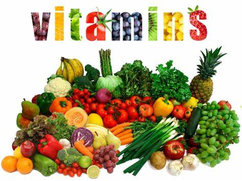

HEALTHY LIFESTYLE
VITAMINS NUTRIENTS
- The vitamins are natural and essential nutrients, required in small quantities and play a major role in growth and development, repair and healing wounds, maintaining healthy bones and tissues, for the proper functioning of an immune system, and other biological functions.
BENEFITS:

Vitamin A-It is essential for eye health. .
Vitamin B1-It is essential for producing various enzymes that help break down blood sugar.
Vitamin B2-It is essential for the growth and development of body cells and helps metabolize food..
Vitamin B3-The body needs niacin for the cells to grow and work correctly.
Vitamin C-It contributes to collagen production, wound healing, and bone formation.
It also strengthens blood vessels, supports the immune system, helps the body absorb iron,
and acts as an antioxidant.
Vitamin D-It is necessary for the healthy mineralization of bone.